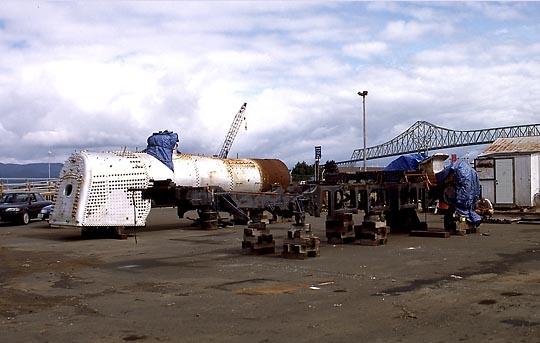

Last updated: 4 September 2025
| Builder: | Baldwin Locomotive Works |
| Build #: | 58368 |
| Date: | 04/1925 |
| Engine #: | 21 |
| Railroad: | Santa Maria Valley Railroad |
| Website: | www.astoriarailroad.org |
| Email: | info@astoriarailroad.orgs |
| Location 1: | Astoria Railroad Preservation Association 446 W Marine Dr, Astoria, OR 97103 |
| GPS: | 46.185867, -123.858878 Astoria Riverfront Trolley building. |
| Phone: | 503-325-5323 |
| Status: | Restoration |
| Notes: | Seen on Google Earth (Sep 2025) on railroad tracks along Industry St. behind shop: an old rail car, a locomotive tender, and what appears to be a water tank from a tank engine. |
2-8-2 Santa Maria Valley #21 is currently being restored by Astoria Railroad Preservation Association Inc. Built in 1925, this Mikado was operated by the Santa Maria Valley at Santa Maria, CA until it was retired in the 1960s. It was then sold to D.B. Morgan at San Rafael, CA, and later to the Puget Sound Railway Historical Association of Snoqualmie, WA in 1978. The locomotive was stored in pieces at Snoqualmie until being sold to ARPA and moved to Astoria in the early 1990s.
| Class: | |
| Gauge: | 4'-8½" |
| F.M.Whyte: | 2-8-2 (Mikado) |
| Drivers: | 50 |
| Gear Ratio: | |
| Tractive Effort: | 31,900 |
| Weight: | 166,000 |
| Weight on Drivers: | 128,950 |
| Length: | |
| Boiler: | |
| Cylinders: | 19x26 |
| Top Speed: | |
| Fuel: | |
| Fuel Type: | Oil |
| Water: | |
| Steam psi: | 200 |